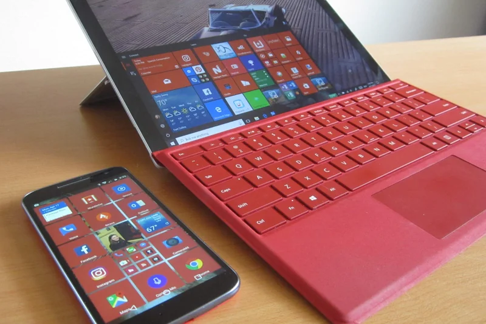
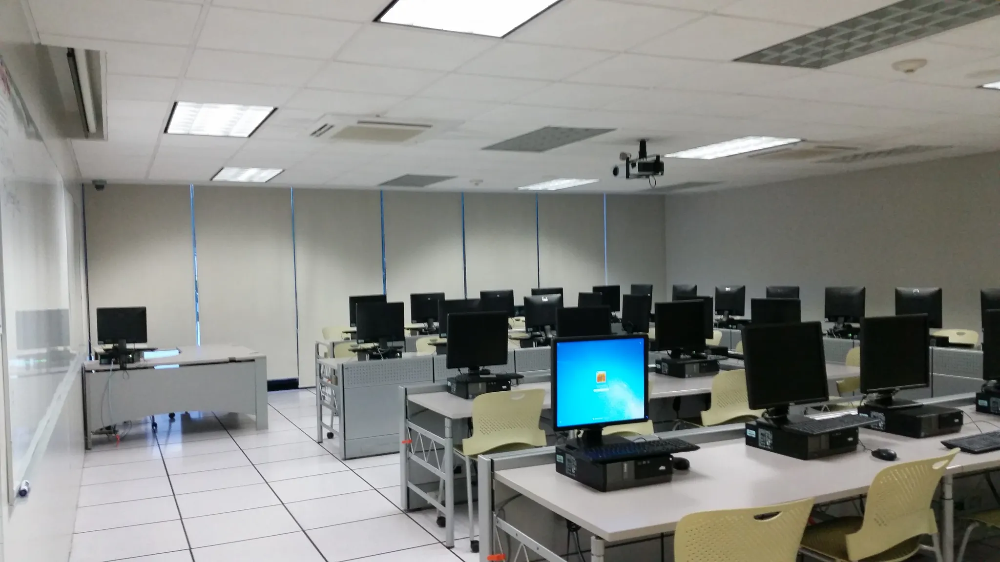
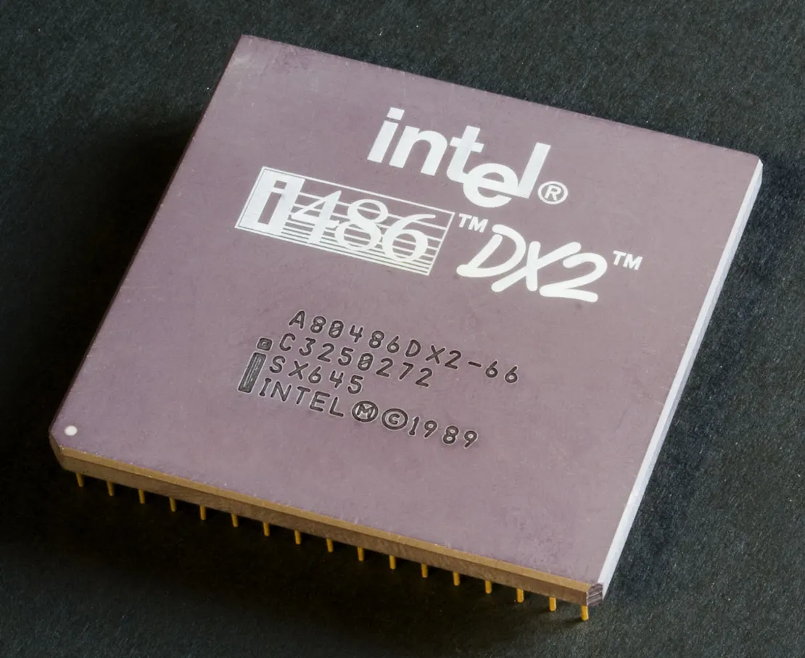

Hi, I’m Nicolás and, just like you, I have been learning about how to improve my internet connection. I am not an expert on the subject, but by searching online, watching tutorials, and learning through trial and error, I have managed to improve the quality of the internet in areas without good connectivity.
What is buying a computer for you?
In this solution, you will be able to clarify some important things to make the decision. On one hand, you will differentiate the main characteristics of a computer and a series of recommendations based on these characteristics. You will also be able to take your needs and capabilities into account for the analysis. I hope you can feel supported and confident as you move forward in selecting a computer.
What is it for?
Making a purchase decision on topics where we are not experts can be a difficult exercise. For this reason, we have developed this solution to accompany you in this process. Ultimately, this solution serves to help you make an informed decision so you don’t spend more money than necessary or end up buying a computer that does not meet your requirements.
How do I know if I need one?
Knowing whether or not you need to make a purchase involves two fundamental criteria:
- Reflect deeply and meditatively on whether you need it. To do this, ask yourself: What need is buying a computer solving? Can this need be solved in another way? For example, can you do the same thing with the cell phone you currently have, or perhaps with a tablet?
- If you have already confirmed that the need you are facing can only be solved with access to a computer, it is time to look at other alternatives before buying. For example, can you borrow a computer from school or the library? Can you get a donated device from a family member or a company?
If you have exhausted the previous options and have definitely decided to buy a computer, this solution is the right one for you.
What are the advantages of a computer compared to a cell phone?
Speed and capacity are two of the great advantages that computers have compared to phones. With a computer, you have a keyboard and a mouse at your disposal, which allows you to type and navigate menus much faster. In addition, the larger screen of a computer allows you to organize your digital space in a way that a small phone screen cannot. It will also allow you to…
These factors not only save you time; they also allow you to multitask. On a computer, you can more easily switch between applications and even have them comfortably on the screen at the same time. For example, you can have one window open with your resume and another open with a job you are looking for. Or if you are looking for the best deal, you can have pages for several products open at the same time to compare them easily.

What options exist?
- Desktop computer
This is a computer designed to be installed in a static location, such as a desk or table. The hardware components usually consist of a computer case that houses the motherboard with the respective components.

- Laptop
Simply called a laptop, this is a computer that can be moved or transported with relative ease. Laptops are small, lightweight, and specially designed so that their batteries are capable of powering them for an extended period of time (usually 4 to 5 hours). Screen sizes range from 11 to 15 inches.

- Pros and cons
| Category | Desktop | Laptop |
|---|---|---|
| Portability | It is in a fixed location. | It can be transported with ease. |
| Cost | It is more economical. | It is more expensive. |
| Upgradability and Customization | Its hardware components can be updated and improved with ease. This makes it easy to customize to your needs. | It is increasingly difficult to update its hardware components, as most come integrated. In some, you can change the RAM memory and the hard drive. |
| Energy independence | It must always be connected to an electrical power source. | By having a battery, it can be disconnected from an electrical power source for a few hours; however, over time this battery wears out and lasts less time until it needs to be replaced. |
| Energy consumption | They consume more energy. | They consume less energy as their components are more compact. |
| Space | They take up more space. | They take up little space. |
What should I keep in mind to make this decision?
Step 0 → Before starting: ALERT! What is hardware and software?
It is important to know that there are two basic components in a computer: Hardware → and software:
- Hardware →: It is the set of components that make up the material part of a computer.
- Software: It is the set of programs, instructions, data, and computer rules for executing certain tasks on a computer.
Below we will explain what the main hardware components of a computer are, which are important when buying one.
| Element | Image | Description |
|---|---|---|
| Processor (CPU) → |  | This is the brain of the machine, undoubtedly one of the fundamental factors to keep in mind. Remember that depending on the power of this element, the equipment will be able to execute the instructions you give it faster. |
| Storage |  | The hard drive → marks the storage capacity of your equipment. |
| RAM Memory |  | The RAM memory → temporarily stores the data of the applications that are running. The more RAM your computer has, the greater its capacity to run different programs at the same time optimally. |
| Graphics card |  | The graphics card is responsible for processing data related to images and videos that are played on the computer. |
| Peripherals |  | These refer to the input and output access points of other devices that you will connect to your computer. For example: USB connection → ports, audio outputs, HDMI connections, etc. |
| Screen |  | It is what allows you to see what you are doing on your computer. |
| Battery |  | Only applies to laptops and determines the usage time you have without being connected to power. |
Step 1 → The fundamental criteria
Now that you know each of the main hardware components, we will tell you what the characteristics are that differentiate their performance, cost, and the questions you should ask yourself to choose one option or another.
| Element | Detail | Relevant questions |
|---|---|---|
| Processor | If you are looking for a fast computer that performs tasks effectively without slowing down, you have to take into account the number of cores. In addition, the frequency or working speed must be detailed. The higher the number, the better the performance; this factor is measured in GHz (gigahertz). So 3GHz is much better than 2.5GHz. Regarding brands, this is the recommendation: If you can afford it, opt for an Intel; if you need something cheaper, an AMD. And if you are really tight on money, choose a Celeron. | How many programs can you use at the same time? What activities will you perform with your computer, are you going to design models, browse the internet, play games? Intel or AMD? How many cores? |
| Storage | 500 GB is more than enough for “normal” home use. If you like to save movies, series, etc., it may be necessary to choose a hard drive of 1 TB (terabyte) or higher. Speed is also fundamental. It is measured in revolutions per minute (rpm); the higher the speed, the better the data reading and writing will be. Currently, there are two different technologies: The traditional hard drive (HDD), which is slower but cheaper. The other is the solid-state drive (SSD), faster but more expensive. | Solid-state drive or hard drive? How much information are you going to save? Do I want the computer to turn on quickly? |
| RAM Memory | The more RAM your computer has, the greater its capacity to run different programs at the same time optimally. Calculating how much RAM you need for your equipment is 100% related to the type of use you give it. The more programs you use (such as design programs, editing, among others), the more you will need. If you are going to use design programs, video games, or simply have the money and want a very fast computer, buy 16GB; if your use is for conventional tasks (writing, browsing, etc.), 8GB will be enough; if you don’t have much budget, you must settle for 4GB and be willing to accept that the computer will not be very fast. | What programs am I going to use? How many GB do I need? |
| Graphics card | It can be an important factor or not depending on the use you are going to give it. If in your case you only need it for basic tasks and standard use, any graphics card will work. But, if you require graphic work or gaming, a dedicated graphics card is ideal. Don’t complicate your life. For standard use, you don’t need a spectacular graphics card. Any of the Radeon or Nvidia brands will give you great service. | Am I going to use it for video games or design programs? Nvidia and Radeon? |
| Screen | Interaction with a screen is increasingly frequent, so it is important that it provides comfort and takes care of your eyesight. For this, we must take into account: Size: If you need to take the equipment from one place to another, 14 inches is ideal, but if your purpose is graphic work, you need a larger size. Resolution: It is useless to buy a large screen with poor resolution. From 1080p is full HD and is a quite good resolution. Monitors up to 23” are recommended to avoid the pixelated effect caused by images with low resolution. | How many inches do I need? What resolution is enough for my requirements? Do you need to manage several programs and at the same time design or watch your favorite movies? |
| Audio | This will depend on the speakers you buy for a desktop computer. In laptops, this feature is not their strong suit, but “gamer” type computers usually come with great sound. | Do you need extraordinary sound for your parties or to watch movies, or do you already have a great speaker that you can connect to your computer? |
Step 2 → Let’s make the decision
Now that you know the fundamental elements, it is time to make a decision. For this, we have developed a series of simple questions, and depending on your answer, we would recommend one hardware feature or another:
- Criterion 0: Set a budget
Now it’s time to define a budget! For this, you can calculate how many days of work per month buying this computer represents. Ultimately, the decision will fall on this point. This purchase can easily mean more than a month of work, so it is very important to try to be as informed as possible before deciding.
- Criterion 1: Usage habits
Now let’s remember some of the most relevant questions when defining our usage habits:
- Do I need the computer to be portable, or do I prefer to use it in one place?
- Am I going to use it for video games and design programs or for office tasks?
- How much information are you going to save?
- Do I need to use several programs at the same time?
With these questions and your budget, you can now narrow down to a smaller list of options. Choose wisely.
Don’t be fooled
It is important to remember that when going to a store, a salesperson usually tries to push the “star product” on us. However, many times the cost of computers from 6 months or a year ago is significantly lower than the technologies of that moment. Sometimes, you can find second-hand computers that have been in good hands and make a good deal. On the other hand, I can only recommend that if possible, you buy a desktop computer or a laptop that allows you to upgrade its hardware.
The computer I am writing to you from, I bought 13 years ago. It has gone through a hard drive change and an increase in RAM, in addition to a few repairs, but right now it works well and has been a great long-term investment.
Finally, remember that now it is very easy to find pages and people dedicated exclusively to making reviews and evaluating the performance of computers. Additionally, some pages allow you to compare between several options. Once you have selected the computers available on the market that best fit your case, use these pages and user comments to make a more accurate decision.
Another recommendation that never hurts is to be guided by the reputation of the brand and the seller. In my case, from experience, I recommend the ASUS brand in terms of value for money, although from SOLE, we have also done well with the Lenovo brand.
How much is enough?
This question is difficult to answer, but I think we can rephrase it as follows: Does the option you chose meet the need and intention you projected at the beginning? In my case, 13 years ago I bought a computer for university, but also one that would allow me to play video games, download, and watch many movies. That is, going for the minimum (that it would work for university), I should have selected a laptop, lightweight, with good battery, a small screen, an intermediate processor, 8GB of RAM, and a generic graphics card. However, I did the exact opposite: I selected a large, heavy computer with low battery and a dedicated graphics card, what they would call a “gamer” computer: The ASUS N53SV.
By not thinking through my decision well, I ended up buying a computer that was too big and heavy to transport and had poor battery life. Ultimately, its main function was to be used for university; the video games and movies were secondary. Right now, although I use it, I almost never transport it; it ended up being, in practice, a desktop computer. That is why from SOLE Voltaje, we don’t want you to fall into mistakes like mine! Always remember that many times “less is more.”
With what we have just seen, you can no longer be fooled, it’s time to make the decision!

Related solutions
- How to get donated equipment? →
- The internet in a box: Jangala’s Big Box →
- How to generate electricity using a bicycle? →
Remember that at Voltaje ⚡⚡ you can find many more solutions to connect without fear of using the internet as a group. Go ahead and keep browsing! See more solutions →
References
- Alkosto
- Todotintasysuministros
- Promart
- Conquistainternet
- Wikipedia
- Wikipedia
- Compuline
- Multicopy.
- Impactomedia.
- Wikimedia
- Wikimedia
- Wikimedia
- Wikimedia
- Pcmag
- Felixwong
- Wrike
{kind=link}
{kind=link}
{kind=link}
{kind=link}